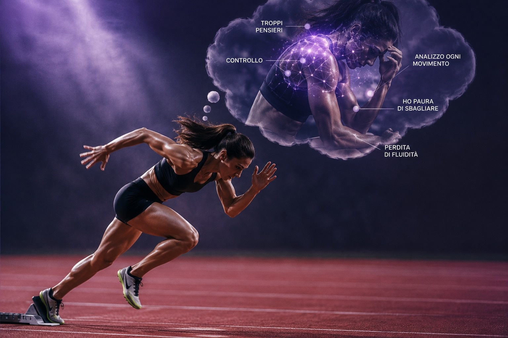
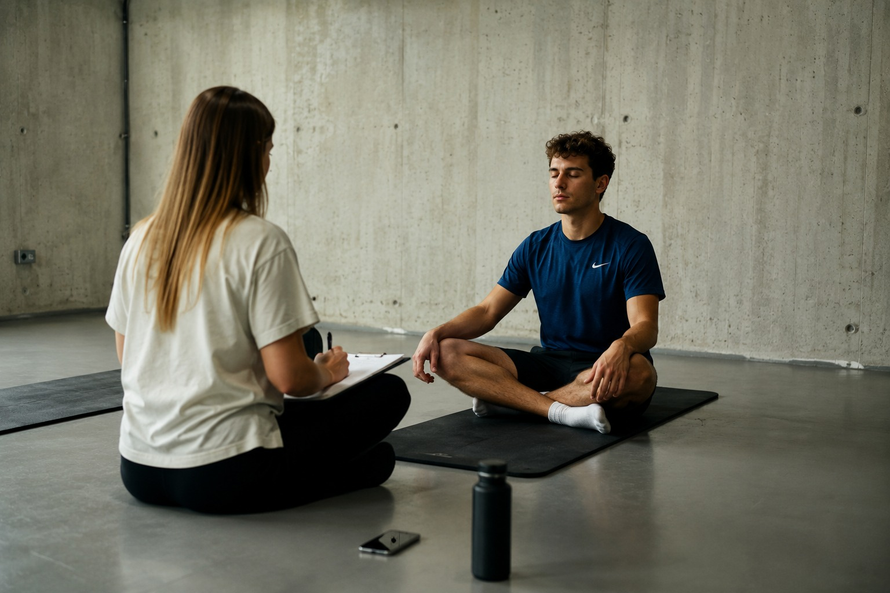

Perché alcune persone rendono meglio sotto pressione e altre crollano?
La differenza sta nel modo in cui il nostro cervello interpreta e gestisce quella pressione.
Ilaria Dammicco
Pubblicato il 19 Giugno 2026 · 10 min di lettura
Immagina questa scena.
È il novantesimo minuto. Rigore decisivo. Tutti gli occhi sono puntati su un giocatore.
Oppure pensa a un docente che sta per entrare in aula per tenere un intervento importante, a un professionista che deve fare una presentazione davanti ai dirigenti, o a uno studente pochi minuti prima di un esame.
Il cuore batte forte. Le mani si fanno sudate. Lo stomaco si chiude.
Eppure succede qualcosa di curioso: alcune persone in questi momenti sembrano tirare fuori il meglio di sé, mentre altre si bloccano e commettono errori che normalmente non farebbero.
Perché?
La risposta della scienza è sorprendente: non è la pressione in sé a fare la differenza.
La differenza sta nel modo in cui il nostro cervello interpreta e gestisce quella pressione.

La pressione non è il problema
Quando siamo sotto pressione il nostro organismo entra in uno stato di attivazione psicofisiologica (arousal): aumenta la frequenza cardiaca, si liberano adrenalina e cortisolo e l'attenzione si focalizza sul compito.
Molte persone interpretano immediatamente questi segnali come qualcosa di negativo:
"Sono agitato, quindi andrà male."
In realtà, l'arousal non è sinonimo di ansia debilitante.
Una certa attivazione è addirittura necessaria per performare al meglio. La ricerca parla infatti di un livello di attivazione ottimale: troppo poca attivazione può generare apatia e scarsa concentrazione, mentre un'attivazione eccessiva può portare al sovraccarico.
La domanda, quindi, non è:
"Sono agitato?"
La domanda più utile è:
"Come sto interpretando questa attivazione?"
Challenge o Threat? Il ruolo dell'Appraisal
Uno dei modelli più interessanti è il Challenge and Threat Model.
Secondo questo approccio, quando ci troviamo di fronte a una situazione impegnativa effettuiamo, spesso in maniera automatica, una valutazione cognitiva chiamata appraisal.
Challenge (Sfida)
"Le mie risorse sono sufficienti per affrontare questa situazione."
Si percepisce la situazione come una sfida da vincere.
Threat (Minaccia)
"Le richieste sembrano superiori alle mie risorse."
Si vive la situazione come una minaccia.
È interessante notare che due persone possono sperimentare gli stessi segnali corporei — cuore accelerato, mani sudate, attivazione elevata — ma interpretarli in maniera completamente diversa.
La prima persona può pensare:
"Sono attivato e pronto a dare il massimo."
La seconda:
"Sto andando nel panico."
Le sensazioni fisiche sono simili.
Il significato attribuito è profondamente diverso.
Ed è proprio questa interpretazione a influenzare la performance successiva.
Perché a volte sembriamo improvvisamente meno bravi?
Una delle spiegazioni più solide in letteratura è fornita dalla Reinvestment Theory.
Molte abilità, quando vengono praticate a lungo, diventano altamente automatizzate. Pensiamo alla guida: dopo anni di esperienza, cambiare marcia, dosare l'acceleratore e coordinare i movimenti avviene quasi senza uno sforzo cosciente.
Immaginiamo ora di dover pensare deliberatamente a ogni singola azione:
"Adesso premo la frizione… ora inserisco la marcia… ora rilascio lentamente il pedale…"
Paradossalmente, probabilmente guideremmo peggio.
Dal punto di vista scientifico, questo è il nucleo della Reinvestment Theory: riportare il controllo cosciente su processi ormai automatizzati tende a interferire con la fluidità dell'esecuzione.
Sotto pressione, il tennista inizia a monitorare il movimento del polso, il calciatore pensa all'appoggio del piede, il professionista controlla ogni parola che sta per pronunciare.
La persona passa dal "fare" al "controllare il come fare".
Il gesto si irrigidisce
La fluidità diminuisce
L'errore aumenta
Questo fenomeno è spesso alla base del cosiddetto choking under pressure, ovvero il crollo prestativo in situazioni ad alta pressione.

Quando la mente si riempie di rumore
La pressione può compromettere la prestazione anche attraverso un secondo meccanismo: la distrazione attentiva.
Le nostre risorse cognitive sono limitate.
Quando la mente viene occupata da pensieri come:
"E se sbaglio?"
"Cosa penseranno gli altri?"
"Non posso permettermi di fallire."
una parte dell'attenzione viene sottratta al compito.
La situazione si trasforma in una sorta di dual-task, un doppio compito: da una parte dobbiamo eseguire la prestazione, dall'altra stiamo contemporaneamente gestendo preoccupazioni, scenari futuri e paura delle conseguenze.
Il risultato è una minore efficienza attentiva e una maggiore probabilità di commettere errori.
Perché alcune persone sembrano rendere meglio sotto pressione?
La ricerca suggerisce che queste persone non siano necessariamente meno emotive o meno sensibili allo stress.
Piuttosto, tendono ad avere alcune caratteristiche psicologiche particolarmente utili:
Maggiore controllo percepito, cioè la sensazione di poter influenzare almeno alcuni aspetti della situazione
Più elevata autoefficacia, ovvero la convinzione di possedere le risorse necessarie per affrontare il compito
Maggiore capacità di interpretare l'attivazione come una sfida e non come una minaccia
Minore tendenza al reinvestment, cioè al controllo eccessivamente cosciente del gesto
Migliore capacità di recuperare attentivamente ed emotivamente dopo un errore
In altre parole, queste persone non sono prive di pressione.
Sono semplicemente più allenate a conviverci.

La buona notizia: la risposta alla pressione si può allenare
La letteratura scientifica è sempre più concorde su questo punto: la capacità di performare sotto pressione non è un talento immutabile.
È una competenza psicologica allenabile.
Possiamo imparare a:
riconoscere i nostri segnali di attivazione
modificare il nostro appraisal, passando da minaccia a sfida
utilizzare routine pre-performance che favoriscano concentrazione e automatismo
allenare il dialogo interiore
esporci gradualmente a situazioni ad alta pressione
sviluppare strategie di regolazione emotiva e attentiva
In altre parole, l'obiettivo non è eliminare la pressione dalla nostra vita.
L'obiettivo è imparare a utilizzarla a nostro favore.
Ed è proprio qui che nasce la vera performance.
E tu?
Quando sei sotto pressione tendi a dare il meglio di te o senti di irrigidirti e perdere fluidità?
Nei prossimi articoli approfondiremo proprio questo tema: parleremo di self-talk, routine pre-performance, gestione dell'attivazione e delle strategie che la psicologia dello sport utilizza per aiutare atleti, professionisti e studenti a performare al meglio nei momenti che contano davvero.
Iscriviti alla newsletter
per non perdere i prossimi contenuti.
Ci vediamo sabato prossimo 🦋
Riferimenti bibliografici
Baumeister, R. F. (1984). Choking under pressure: Self-consciousness and paradoxical effects of incentives on skillful performance. Journal of Personality and Social Psychology, 46, 610-620.
Beilock, S. L., & Carr, T. H. (2001). On the fragility of skilled performance: What governs choking under pressure? Journal of Experimental Psychology: General, 130, 701-725.
Masters, R. S. W. (1992). Knowledge, knerves and know-how: The role of explicit versus implicit knowledge in the breakdown of a complex motor skill under pressure. British Journal of Psychology, 83, 343-358.
Otten, M. (2009). Choking vs. clutch performance: A study of sport performance under pressure. Journal of Sport and Exercise Psychology, 31, 583-601.
Hase, A., O'Brien, J., Moore, L. J., & Freeman, P. (2019). The relationship between challenge and threat states and performance: A systematic review. Sport, Exercise, and Performance Psychology, 8(2), 123-144.
Gröpel, P., & Mesagno, C. (2017). Choking interventions in sports: A systematic review. International Review of Sport and Exercise Psychology, 10(1), 176-201.
Ogni grande risultato
inizia da un primo passo.
Se questo articolo ti ha toccato, significa che c'è già un'area su cui lavorare. Il prossimo passo è trasformare la consapevolezza in azione.